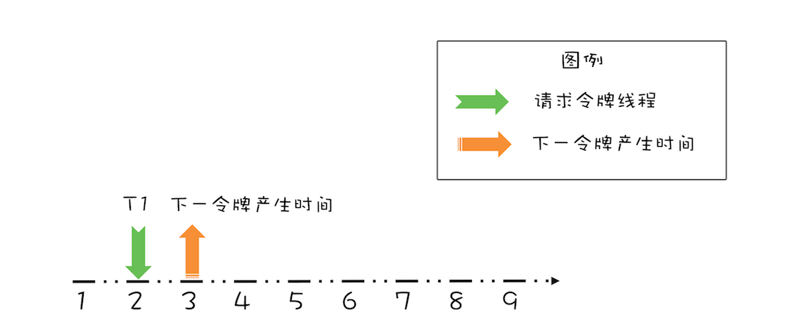
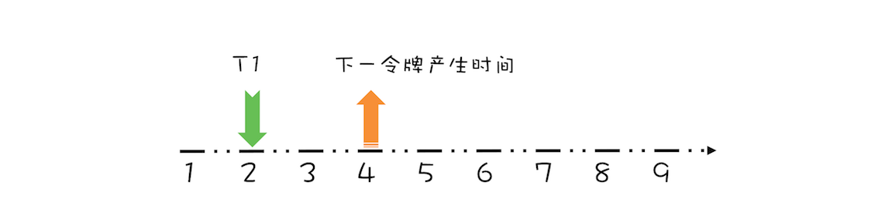
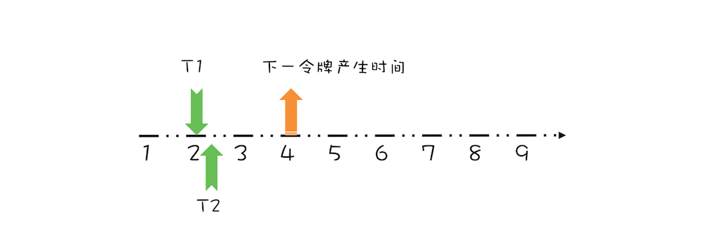
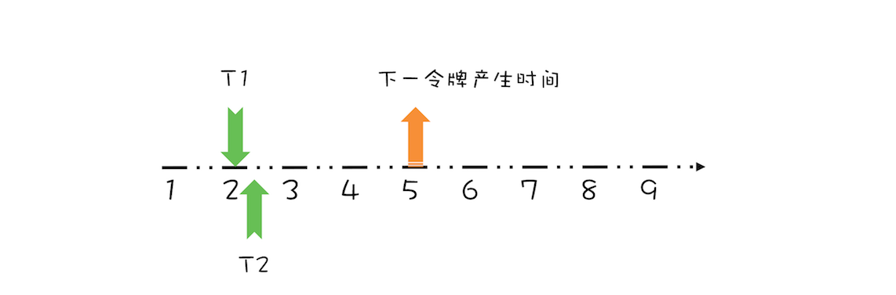
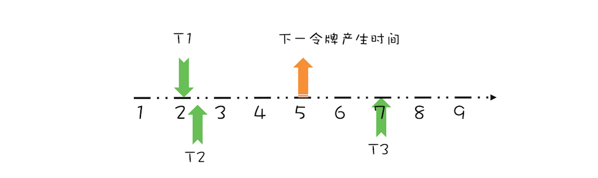
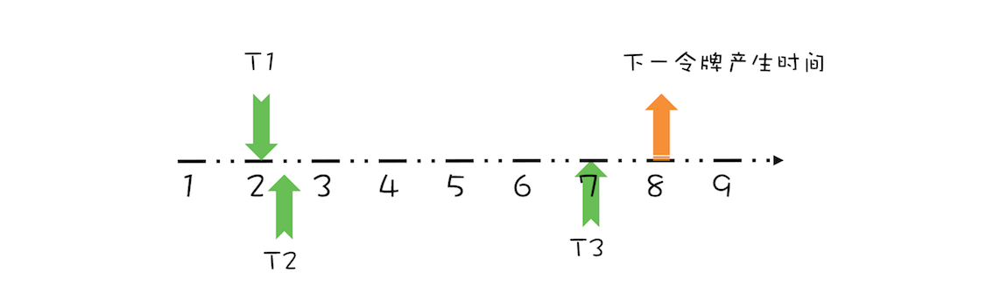

- 00 学习攻略 如何才能学好并发编程？.md.html
- 00 开篇词 你为什么需要学习并发编程？.md.html
- 01 可见性、原子性和有序性问题：并发编程Bug的源头.md.html
- 02 Java内存模型：看Java如何解决可见性和有序性问题.md.html
- 03 互斥锁（上）：解决原子性问题.md.html
- 04 互斥锁（下）：如何用一把锁保护多个资源？.md.html
- 05 一不小心就死锁了，怎么办？.md.html
- 06 用“等待-通知”机制优化循环等待.md.html
- 07 安全性、活跃性以及性能问题.md.html
- 08 管程：并发编程的万能钥匙.md.html
- 09 Java线程（上）：Java线程的生命周期.md.html
- 10 Java线程（中）：创建多少线程才是合适的？.md.html
- 11 Java线程（下）：为什么局部变量是线程安全的？.md.html
- 12 如何用面向对象思想写好并发程序？.md.html
- 13 理论基础模块热点问题答疑.md.html
- 14 Lock和Condition（上）：隐藏在并发包中的管程.md.html
- 15 Lock和Condition（下）：Dubbo如何用管程实现异步转同步？.md.html
- 16 Semaphore：如何快速实现一个限流器？.md.html
- 17 ReadWriteLock：如何快速实现一个完备的缓存？.md.html
- 18 StampedLock：有没有比读写锁更快的锁？.md.html
- 19 CountDownLatch和CyclicBarrier：如何让多线程步调一致？.md.html
- 20 并发容器：都有哪些“坑”需要我们填？.md.html
- 21 原子类：无锁工具类的典范.md.html
- 22 Executor与线程池：如何创建正确的线程池？.md.html
- 23 Future：如何用多线程实现最优的“烧水泡茶”程序？.md.html
- 24 CompletableFuture：异步编程没那么难.md.html
- 25 CompletionService：如何批量执行异步任务？.md.html
- 26 Fork_Join：单机版的MapReduce.md.html
- 27 并发工具类模块热点问题答疑.md.html
- 28 Immutability模式：如何利用不变性解决并发问题？.md.html
- 29 Copy-on-Write模式：不是延时策略的COW.md.html
- 3 个用户来信 打开一个新的并发世界.md.html
- 30 线程本地存储模式：没有共享，就没有伤害.md.html
- 31 Guarded Suspension模式：等待唤醒机制的规范实现.md.html
- 32 Balking模式：再谈线程安全的单例模式.md.html
- 33 Thread-Per-Message模式：最简单实用的分工方法.md.html
- 34 Worker Thread模式：如何避免重复创建线程？.md.html
- 35 两阶段终止模式：如何优雅地终止线程？.md.html
- 36 生产者-消费者模式：用流水线思想提高效率.md.html
- 37 设计模式模块热点问题答疑.md.html
- 38 案例分析（一）：高性能限流器Guava RateLimiter.md.html
- 39 案例分析（二）：高性能网络应用框架Netty.md.html
- 40 案例分析（三）：高性能队列Disruptor.md.html
- 41 案例分析（四）：高性能数据库连接池HiKariCP.md.html
- 42 Actor模型：面向对象原生的并发模型.md.html
- 43 软件事务内存：借鉴数据库的并发经验.md.html
- 44 协程：更轻量级的线程.md.html
- 45 CSP模型：Golang的主力队员.md.html
- 用户来信 真好，面试考到这些并发编程，我都答对了！.md.html
- 结束语 十年之后，初心依旧.md.html
- 捐赠
38 案例分析（一）：高性能限流器Guava RateLimiter
从今天开始，我们就进入案例分析模块了。 这个模块我们将分析四个经典的开源框架，看看它们是如何处理并发问题的，通过这四个案例的学习，相信你会对如何解决并发问题有个更深入的认识。
首先我们来看看Guava RateLimiter是如何解决高并发场景下的限流问题的。Guava是Google开源的Java类库，提供了一个工具类RateLimiter。我们先来看看RateLimiter的使用，让你对限流有个感官的印象。假设我们有一个线程池，它每秒只能处理两个任务，如果提交的任务过快，可能导致系统不稳定，这个时候就需要用到限流。
在下面的示例代码中，我们创建了一个流速为2个请求/秒的限流器，这里的流速该怎么理解呢？直观地看，2个请求/秒指的是每秒最多允许2个请求通过限流器，其实在Guava中，流速还有更深一层的意思：是一种匀速的概念，2个请求/秒等价于1个请求/500毫秒。
在向线程池提交任务之前，调用 acquire() 方法就能起到限流的作用。通过示例代码的执行结果，任务提交到线程池的时间间隔基本上稳定在500毫秒。
//限流器流速：2个请求/秒
RateLimiter limiter =
RateLimiter.create(2.0);
//执行任务的线程池
ExecutorService es = Executors
.newFixedThreadPool(1);
//记录上一次执行时间
prev = System.nanoTime();
//测试执行20次
for (int i=0; i<20; i++){
//限流器限流
limiter.acquire();
//提交任务异步执行
es.execute(()->{
long cur=System.nanoTime();
//打印时间间隔：毫秒
System.out.println(
(cur-prev)/1000_000);
prev = cur;
});
}
输出结果：
...
500
499
499
500
499
经典限流算法：令牌桶算法
Guava的限流器使用上还是很简单的，那它是如何实现的呢？Guava采用的是令牌桶算法，其核心是要想通过限流器，必须拿到令牌。也就是说，只要我们能够限制发放令牌的速率，那么就能控制流速了。令牌桶算法的详细描述如下：
- 令牌以固定的速率添加到令牌桶中，假设限流的速率是 r/秒，则令牌每 1/r 秒会添加一个；
- 假设令牌桶的容量是 b ，如果令牌桶已满，则新的令牌会被丢弃；
- 请求能够通过限流器的前提是令牌桶中有令牌。
这个算法中，限流的速率 r 还是比较容易理解的，但令牌桶的容量 b 该怎么理解呢？b 其实是burst的简写，意义是限流器允许的最大突发流量。比如b=10，而且令牌桶中的令牌已满，此时限流器允许10个请求同时通过限流器，当然只是突发流量而已，这10个请求会带走10个令牌，所以后续的流量只能按照速率 r 通过限流器。
令牌桶这个算法，如何用Java实现呢？很可能你的直觉会告诉你生产者-消费者模式：一个生产者线程定时向阻塞队列中添加令牌，而试图通过限流器的线程则作为消费者线程，只有从阻塞队列中获取到令牌，才允许通过限流器。
这个算法看上去非常完美，而且实现起来非常简单，如果并发量不大，这个实现并没有什么问题。可实际情况却是使用限流的场景大部分都是高并发场景，而且系统压力已经临近极限了，此时这个实现就有问题了。问题就出在定时器上，在高并发场景下，当系统压力已经临近极限的时候，定时器的精度误差会非常大，同时定时器本身会创建调度线程，也会对系统的性能产生影响。
那还有什么好的实现方式呢？当然有，Guava的实现就没有使用定时器，下面我们就来看看它是如何实现的。
Guava如何实现令牌桶算法
Guava实现令牌桶算法，用了一个很简单的办法，其关键是记录并动态计算下一令牌发放的时间。下面我们以一个最简单的场景来介绍该算法的执行过程。假设令牌桶的容量为 b=1，限流速率 r = 1个请求/秒，如下图所示，如果当前令牌桶中没有令牌，下一个令牌的发放时间是在第3秒，而在第2秒的时候有一个线程T1请求令牌，此时该如何处理呢？

线程T1请求令牌示意图
对于这个请求令牌的线程而言，很显然需要等待1秒，因为1秒以后（第3秒）它就能拿到令牌了。此时需要注意的是，下一个令牌发放的时间也要增加1秒，为什么呢？因为第3秒发放的令牌已经被线程T1预占了。处理之后如下图所示。

线程T1请求结束示意图
假设T1在预占了第3秒的令牌之后，马上又有一个线程T2请求令牌，如下图所示。

线程T2请求令牌示意图
很显然，由于下一个令牌产生的时间是第4秒，所以线程T2要等待两秒的时间，才能获取到令牌，同时由于T2预占了第4秒的令牌，所以下一令牌产生时间还要增加1秒，完全处理之后，如下图所示。

线程T2请求结束示意图
上面线程T1、T2都是在下一令牌产生时间之前请求令牌，如果线程在下一令牌产生时间之后请求令牌会如何呢？假设在线程T1请求令牌之后的5秒，也就是第7秒，线程T3请求令牌，如下图所示。

线程T3请求令牌示意图
由于在第5秒已经产生了一个令牌，所以此时线程T3可以直接拿到令牌，而无需等待。在第7秒，实际上限流器能够产生3个令牌，第5、6、7秒各产生一个令牌。由于我们假设令牌桶的容量是1，所以第6、7秒产生的令牌就丢弃了，其实等价地你也可以认为是保留的第7秒的令牌，丢弃的第5、6秒的令牌，也就是说第7秒的令牌被线程T3占有了，于是下一令牌的的产生时间应该是第8秒，如下图所示。

线程T3请求结束示意图
通过上面简要地分析，你会发现，我们只需要记录一个下一令牌产生的时间，并动态更新它，就能够轻松完成限流功能。我们可以将上面的这个算法代码化，示例代码如下所示，依然假设令牌桶的容量是1。关键是reserve()方法，这个方法会为请求令牌的线程预分配令牌，同时返回该线程能够获取令牌的时间。其实现逻辑就是上面提到的：如果线程请求令牌的时间在下一令牌产生时间之后，那么该线程立刻就能够获取令牌；反之，如果请求时间在下一令牌产生时间之前，那么该线程是在下一令牌产生的时间获取令牌。由于此时下一令牌已经被该线程预占，所以下一令牌产生的时间需要加上1秒。
class SimpleLimiter {
//下一令牌产生时间
long next = System.nanoTime();
//发放令牌间隔：纳秒
long interval = 1000_000_000;
//预占令牌，返回能够获取令牌的时间
synchronized long reserve(long now){
//请求时间在下一令牌产生时间之后
//重新计算下一令牌产生时间
if (now > next){
//将下一令牌产生时间重置为当前时间
next = now;
}
//能够获取令牌的时间
long at=next;
//设置下一令牌产生时间
next += interval;
//返回线程需要等待的时间
return Math.max(at, 0L);
}
//申请令牌
void acquire() {
//申请令牌时的时间
long now = System.nanoTime();
//预占令牌
long at=reserve(now);
long waitTime=max(at-now, 0);
//按照条件等待
if(waitTime > 0) {
try {
TimeUnit.NANOSECONDS
.sleep(waitTime);
}catch(InterruptedException e){
e.printStackTrace();
}
}
}
}
如果令牌桶的容量大于1，又该如何处理呢？按照令牌桶算法，令牌要首先从令牌桶中出，所以我们需要按需计算令牌桶中的数量，当有线程请求令牌时，先从令牌桶中出。具体的代码实现如下所示。我们增加了一个resync()方法，在这个方法中，如果线程请求令牌的时间在下一令牌产生时间之后，会重新计算令牌桶中的令牌数，新产生的令牌的计算公式是：(now-next)/interval，你可对照上面的示意图来理解。reserve()方法中，则增加了先从令牌桶中出令牌的逻辑，不过需要注意的是，如果令牌是从令牌桶中出的，那么next就无需增加一个 interval 了。
class SimpleLimiter {
//当前令牌桶中的令牌数量
long storedPermits = 0;
//令牌桶的容量
long maxPermits = 3;
//下一令牌产生时间
long next = System.nanoTime();
//发放令牌间隔：纳秒
long interval = 1000_000_000;
//请求时间在下一令牌产生时间之后,则
// 1.重新计算令牌桶中的令牌数
// 2.将下一个令牌发放时间重置为当前时间
void resync(long now) {
if (now > next) {
//新产生的令牌数
long newPermits=(now-next)/interval;
//新令牌增加到令牌桶
storedPermits=min(maxPermits,
storedPermits + newPermits);
//将下一个令牌发放时间重置为当前时间
next = now;
}
}
//预占令牌，返回能够获取令牌的时间
synchronized long reserve(long now){
resync(now);
//能够获取令牌的时间
long at = next;
//令牌桶中能提供的令牌
long fb=min(1, storedPermits);
//令牌净需求：首先减掉令牌桶中的令牌
long nr = 1 - fb;
//重新计算下一令牌产生时间
next = next + nr*interval;
//重新计算令牌桶中的令牌
this.storedPermits -= fb;
return at;
}
//申请令牌
void acquire() {
//申请令牌时的时间
long now = System.nanoTime();
//预占令牌
long at=reserve(now);
long waitTime=max(at-now, 0);
//按照条件等待
if(waitTime > 0) {
try {
TimeUnit.NANOSECONDS
.sleep(waitTime);
}catch(InterruptedException e){
e.printStackTrace();
}
}
}
}
总结
经典的限流算法有两个，一个是令牌桶算法（Token Bucket），另一个是漏桶算法（Leaky Bucket）。令牌桶算法是定时向令牌桶发送令牌，请求能够从令牌桶中拿到令牌，然后才能通过限流器；而漏桶算法里，请求就像水一样注入漏桶，漏桶会按照一定的速率自动将水漏掉，只有漏桶里还能注入水的时候，请求才能通过限流器。令牌桶算法和漏桶算法很像一个硬币的正反面，所以你可以参考令牌桶算法的实现来实现漏桶算法。
上面我们介绍了Guava是如何实现令牌桶算法的，我们的示例代码是对Guava RateLimiter的简化，Guava RateLimiter扩展了标准的令牌桶算法，比如还能支持预热功能。对于按需加载的缓存来说，预热后缓存能支持5万TPS的并发，但是在预热前5万TPS的并发直接就把缓存击垮了，所以如果需要给该缓存限流，限流器也需要支持预热功能，在初始阶段，限制的流速 r 很小，但是动态增长的。预热功能的实现非常复杂，Guava构建了一个积分函数来解决这个问题，如果你感兴趣，可以继续深入研究。
欢迎在留言区与我分享你的想法，也欢迎你在留言区记录你的思考过程。感谢阅读，如果你觉得这篇文章对你有帮助的话，也欢迎把它分享给更多的朋友。
© 2019 - 2023 Liangliang Lee. Powered by gin and hexo-theme-book.